Formule classique
15€
Une kaakeh classique, une entrée ou un dessert, et une boisson.
Street-food libanaise · Bouffay, Nantes
Des galettes au sésame pétries et cuites chaque matin, garnies à la minute. Mezzés et douceurs 100 % faits maison, sur place ou à emporter.
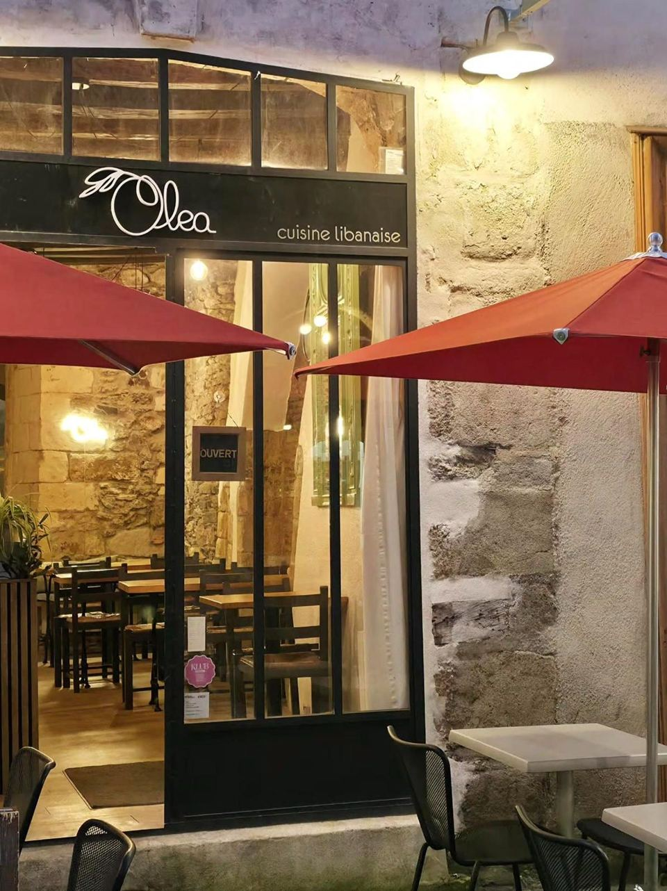
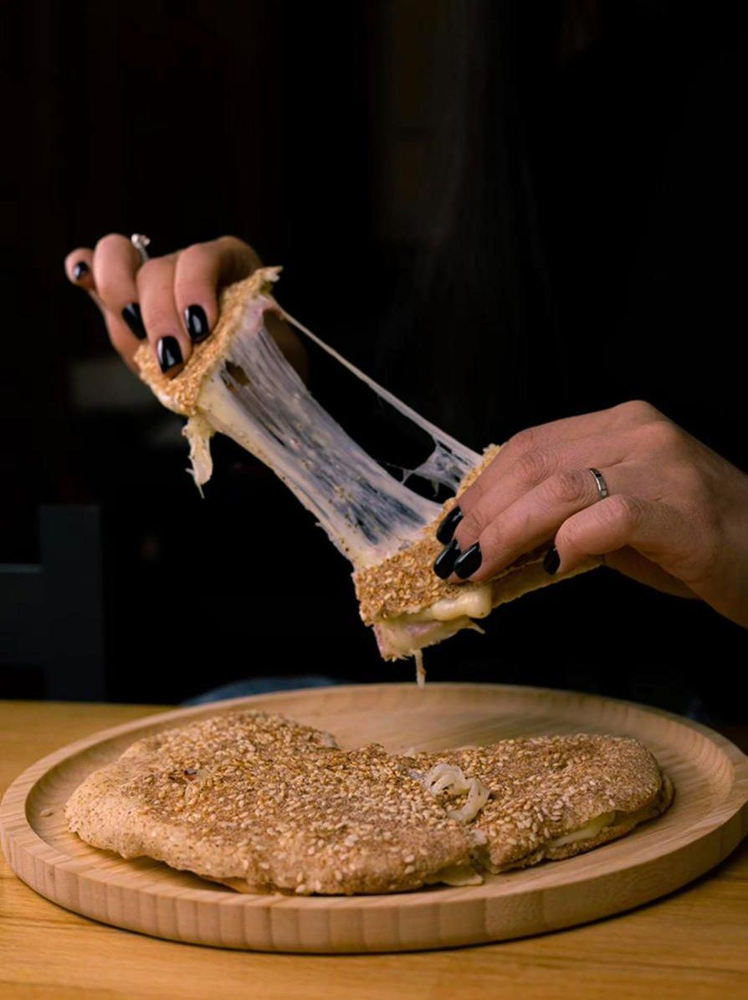
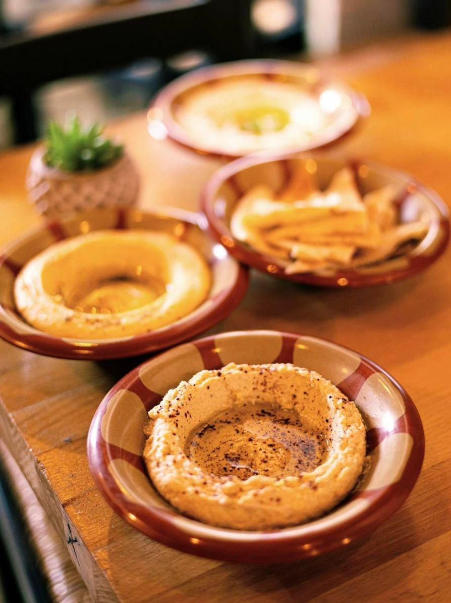
Après ses études, Tarek a voulu ramener un morceau de son Liban natal à Nantes. Il a ouvert Olea pour faire découvrir la kaakeh, une spécialité de Beyrouth encore inconnue ici.
La spécialité
Une galette libanaise couverte de sésame, croustillante dehors, moelleuse dedans. À Beyrouth, on l’achète au coin de la rue. Chez Olea, on la garnit comme un repas.
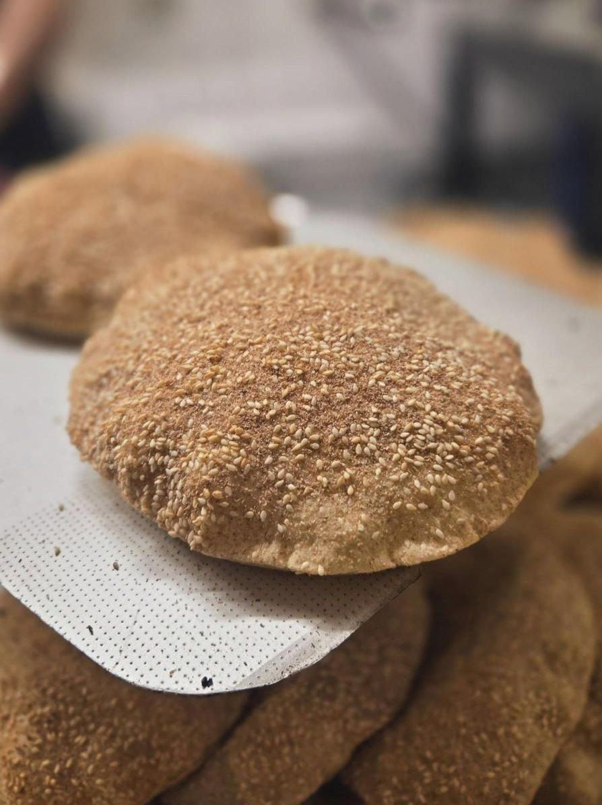
La pâte est préparée sur place chaque jour, puis façonnée en galettes rondes.
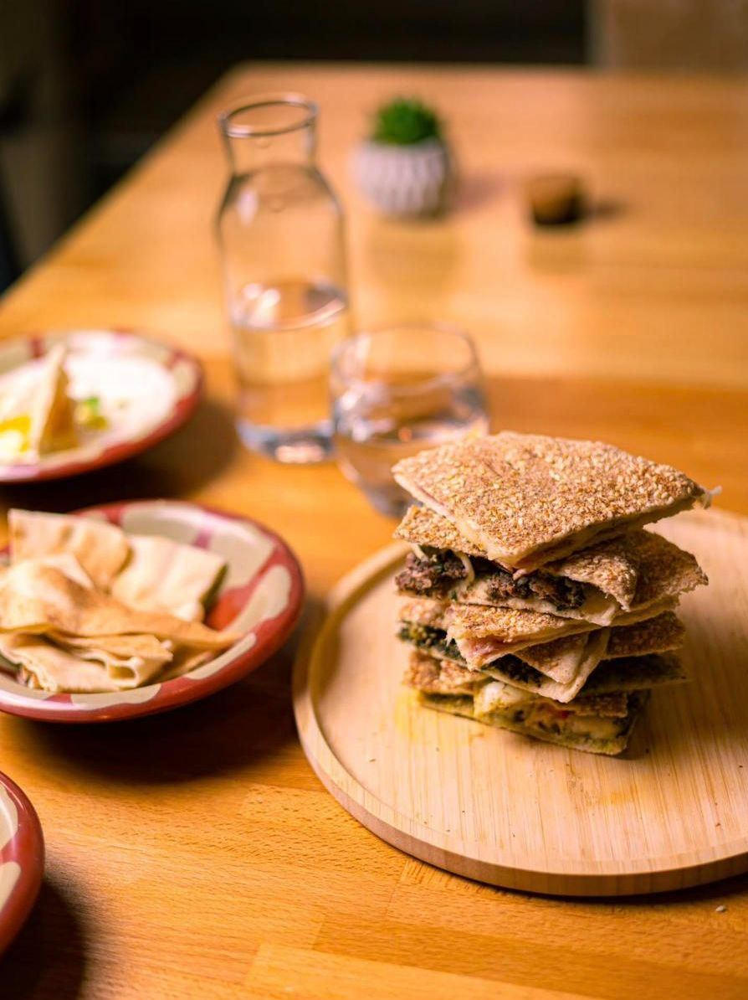
Le sésame grille, la galette gonfle et dore. C’est ce croustillant qui fait la kaakeh.
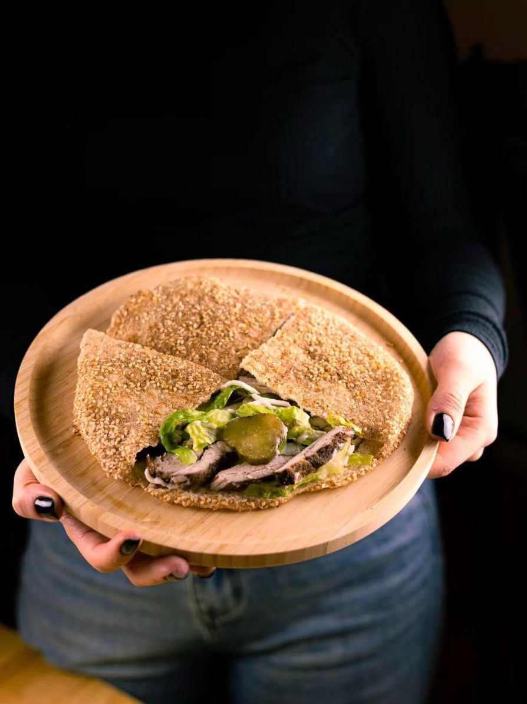
Zaatar, halloumi, poulet grillé aux épices, kafta ou falafel, avec crudités et sauces maison.
Le croquant du sésame, le cœur qui file. Sur place ou à emporter, toujours servie chaude.
Choisis ta garniture
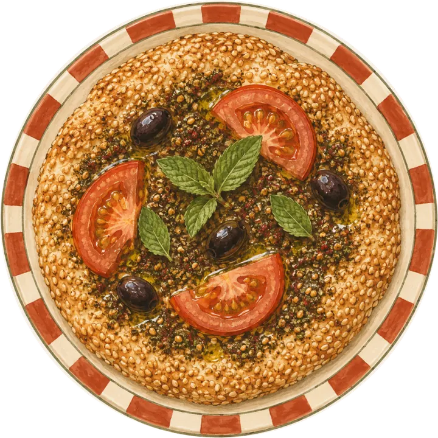
Classiques
Gourmandes
Thym, sumac, sésame et huile d’olive, avec tomates, menthe et olives.
En formule classique : 15 € avec une entrée ou un dessert, et une boisson.
Notre menu
Un voyage de saveurs au cœur de Beyrouth. Tout est fait maison, et chaque bouchée a le goût du Liban.
Formule classique
15€
Une kaakeh classique, une entrée ou un dessert, et une boisson.
Formule gourmande
17€
Une kaakeh gourmande, une entrée ou un dessert, et une boisson.
Entrée : houmous, labneh ou caviar d’aubergines. Dessert : sfouf ou nammoura. Bière libanaise : +2 €.
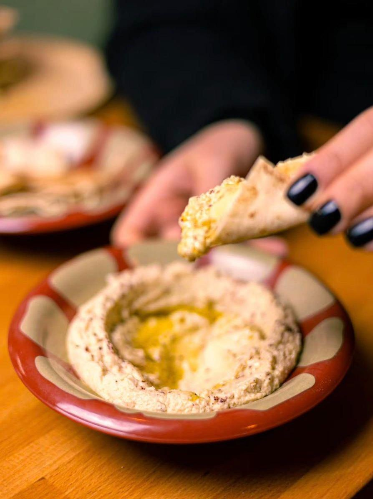
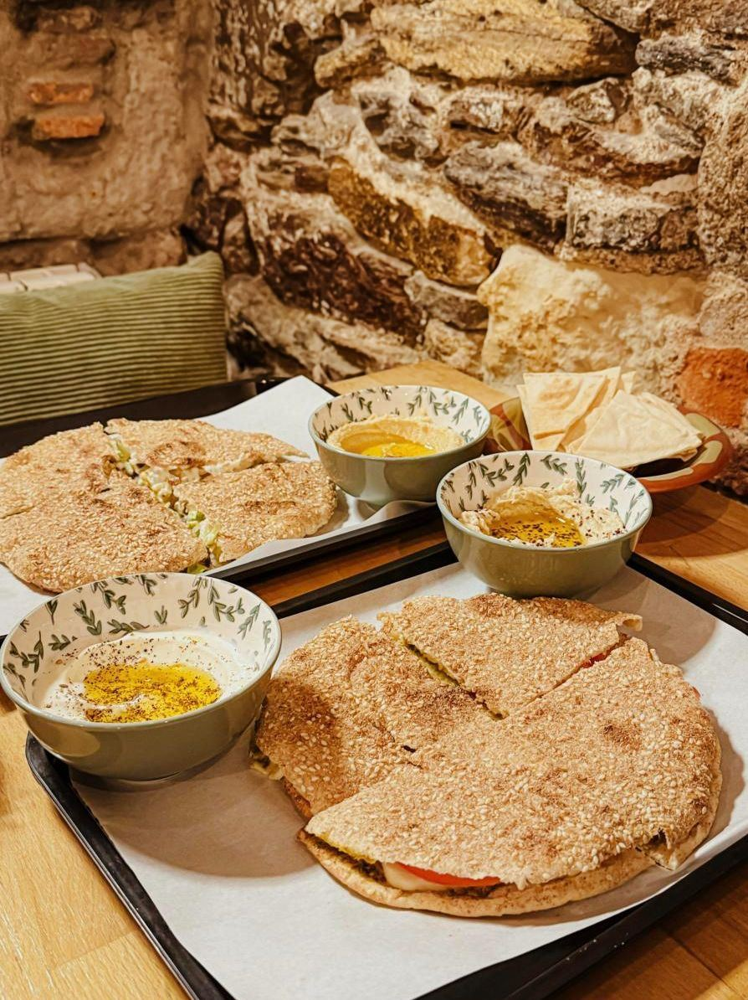
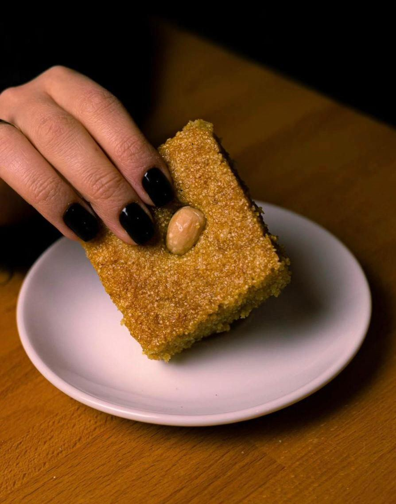
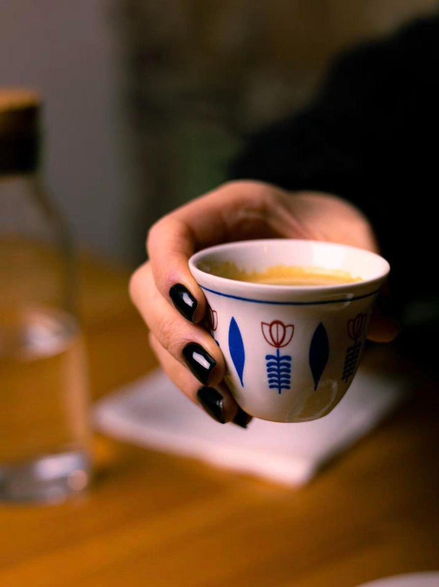
« Nous avons pris la formule gourmande, un kaaké kefta avec le labneh : beaucoup de saveurs, c’était très bien préparé. Le personnel est souriant. »
« Les prix sont très raisonnables, les plats sont délicieux (surtout les kaakehs gourmandes) et pleins de saveurs. »
« Une cuisine qui te donne l’impression d’être au soleil, vue sur la Méditerranée. »
« Super adresse pour la street food libanaise, une vraie pépite ! La labneh, hyper bonne, bien crémeuse. »
Le lieu
Au cœur du Bouffay, une salle en vieilles pierres, des poutres apparentes et une terrasse sous les parasols rouges.
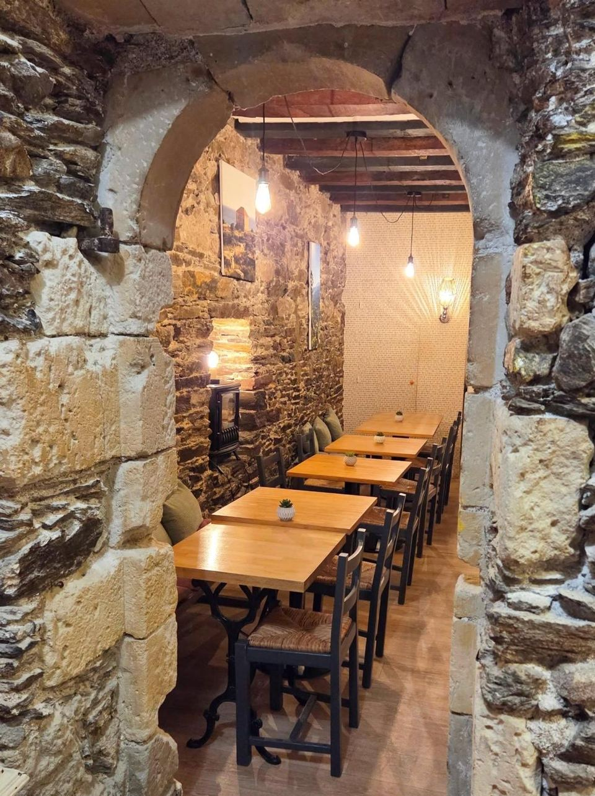
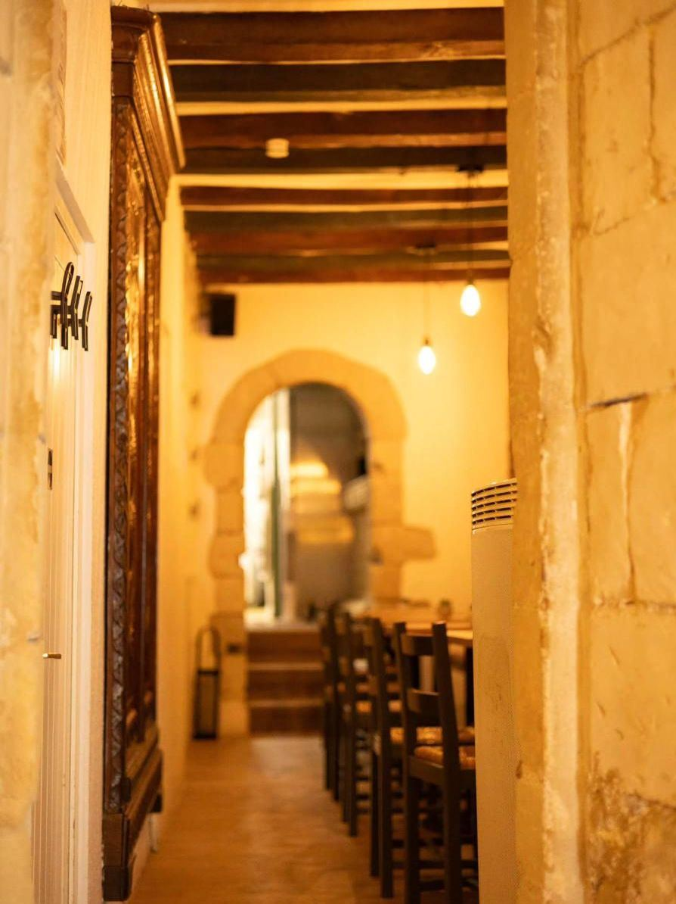
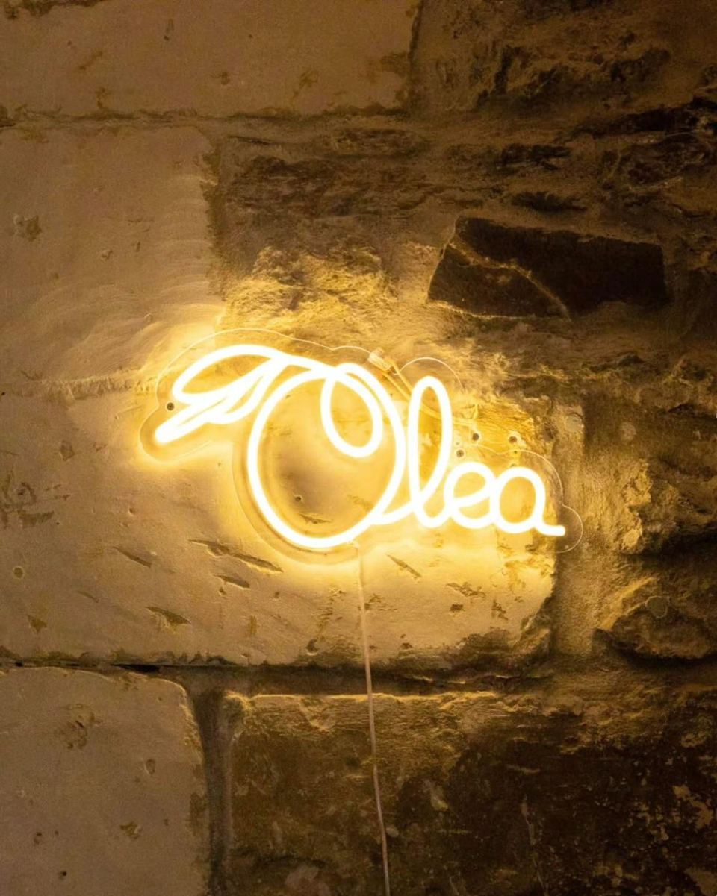
Groupes & tablées
Sous la voûte en pierre, l’endroit idéal pour vos repas en groupe. Appelez-nous pour réserver.
06 25 48 84 67Infos pratiques
Horaires
| Mardi | 12h – 14h30 · 19h – 21h30 |
|---|---|
| Mercredi | 12h – 14h30 · 19h – 21h30 |
| Jeudi | 12h – 14h30 · 19h – 21h30 |
| Vendredi | 12h – 15h · 19h – 22h |
| Samedi | 12h – 15h · 19h – 22h |
| Dimanche | Fermé |
| Lundi | Fermé |
La carte se charge depuis Google uniquement si vous cliquez.